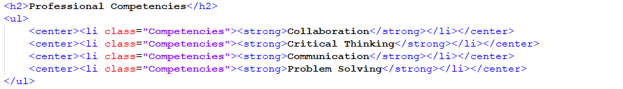
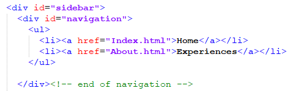
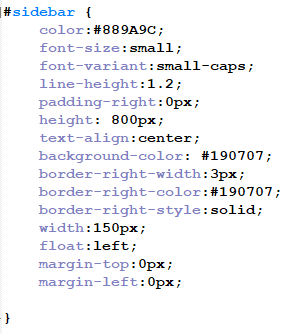

Welcome To My 2021 reflection At DRSS
Have you ever grown in any subject like math, science, etc.? Well, I have. I have grown in using technology this year in 7th grade. Some of the things that show that I have grown in technology is a result of a project last year and this year. At the end of the of the school year me and all of my peers have to decide what we grew the most in that year. The goal of the project was to create a good explanation of who we are and what we worked on that year, whilst using our knowledge to code a website. On my 6th grade portfolio, I had to first learn the basics of hypertext markup language (HTML) and a few cascading style sheet (CSS) tricks. These languages are basically used to make the whole internet. Then in the 7th I had to master most HTML and CSS tricks to make my website look better. There is still room for improvement though.
6th Grade Code
Back when I was coding this, I didn’t really know how to use div tags. So, since I didn’t group this code together in a div id I spammed the center tag so I could center the text and make it centered on the page. So if I wanted go and change the code it would be confusing and take a long time.
7th Grade Code
 This is my new code. You can see it looks a lot cleaner in html. It works by having the div there I can edit that group of code in CSS So instead of spamming code I can have two lines of code and have nice looking code. I had to learn how to use div tags to do this.
Conclusion
In conclusion that’s how I think have grown in using technology by having cleaner code and mastering div tags. Getting better at technology means I can get a career in computing like a personal website maker or if I go down a different path and say I could be a white hat hacker and work for businesses that need to test the privacy for information stored on their servers.